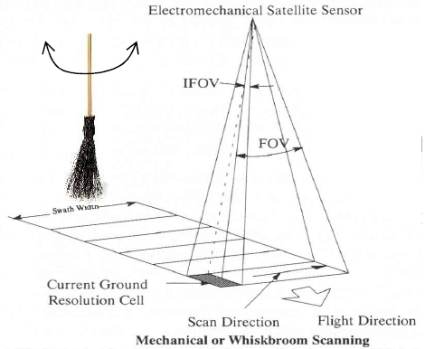
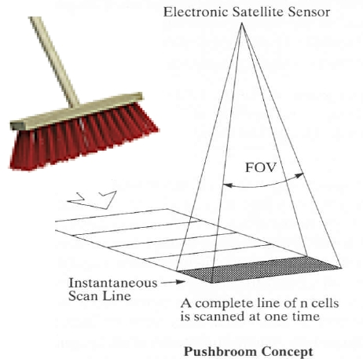

3 Remote sensing data
3.1 Summary
This week’s course mainly involves an introduction to remote sensing data and basic processing operations. At present, there are two main types of satellite sensors: whisk broom and push broom. In order to better understand and use satellite image data, the working principles of these two sensors need to be noted:
3.1.1 Whisk Broom Scanners
Whisk broom is sometimes called Spotlight or Across Track Scanners. It uses a “mirror” to reflect light to a detector and uses a “mirror” to move back and forth to collect the value measured from a pixel. Such moving parts are expensive and prone to damage.

All Landsat sensors prior to Landsat 8 were of the whisk-broom type, and the Landsat 8 OLI devices were of the push-broom type.
3.1.2 Push Broom Scanners
Push-brooms, sometimes called along track scanners, use detectors placed perpendicular to the direction of flight of the spacecraft, which collect images one line at a time as the vehicle flies forward (as shown in the figure below) . The signal received by push-broom is stronger than that of whisk-broom, because the time of whisk-broom in one pixel is very long. A certainty with pushbroom is that the detectors may have different sensitivities, which can lead to image streak noise if not calibrated properly.

The current SPOT, IRS, QuickBird, OrbView, IKONOS, Worldview, GeoEYE, and other sensors are all push-broom.
3.1.3 Image Correction
Remote sensing image correction is divided into geometric correction and radiometric correction. Geometric correction is subdivided into coarse correction, fine correction, hybrid correction, orthorectification, etc. Radiometric correction is divided into radiometric calibration, radiometric correction, atmospheric correction, etc. These concepts are easy to confuse, so we need to understand the purpose and process of each correction. After going through relevant information, I think I can now clearly present each step.
3.1.3.1 Geometric Correction
It refers to using a series of mathematical models to correct and eliminate the deformation caused when the geometric position, shape, size, orientation and other characteristics of the objects on the original image are inconsistent with the expression requirements in the reference system. These deformations are often caused by factors such as the deformation of photographic materials, the distortion of the objective lens, atmospheric refraction, the curvature of the earth, the rotation of the earth, and terrain fluctuations.
Geometric correction is the process of eliminating or correcting geometric errors of remote sensing images. The deformation errors of remote sensing images can be roughly divided into two categories: static errors and dynamic errors. Referring to the two error categories, geometric correction is divided into several types: geometric coarse correction, geometric fine correction, hybrid correction and orthorectification. The correction we often refer to is fine correction.
Geometric Coarse Correction: Correction for the cause of distortion. (Distortion causes: distortion of photographic material, distortion of objective lens, curvature of the earth, rotation of the earth)
Geometric fine correction: geometric correction using control points, which uses a mathematical model to approximately describe the geometric distortion process of remote sensing images, and uses some corresponding points between the distorted remote sensing images and the standard map (that is, the control point data pairs ) to obtain the geometric distortion model, and then use this model to correct the geometric distortion, which does not consider the cause of the straight distortion.
Hybrid correction: The geometric rough correction and the geometric fine correction are done together, and it often includes the precise ephemeris into the correction model.
Orthorectification generally selects some ground control points on the photo, and uses the digital elevation model (DEM) data within the range of the photo that has been acquired to simultaneously perform tilt correction and projection difference correction on the image, and resample the image into an orthographic image. After mosaicing multiple orthophotos together and performing color balance processing, the images cut out within a certain range are orthophotos.
3.1.3.2 Radiometric Correction
- Concept
The intensity of radiation entering the sensor is reflected on the image as a brightness value (or gray value). The greater the radiation intensity, the greater the brightness value. This value is mainly affected by two physical quantities: one is the radiation intensity of solar radiation hitting the ground, and the other is the spectral reflectance of ground objects. When the solar radiation is the same, the difference in brightness on the image directly reflects the difference in the reflectivity of the ground. But, in the actual measurement, it is found that the radiation intensity value is also affected by other factors, and this changed part is the part that needs to be corrected, so it is called radiometric distortion.
The causes of radiation distortion are: (1) the error of the sensor itself (2) the influence of the atmosphere on radiation (3) the influence of terrain on radiation (terrain correction)
- Radiometric correction method
Histogram minimum value removal method
Regression analysis method
- For the cause of radiometric distortion, complete radiation correction includes: radiometric correction, sensor correction, atmospheric correction, terrain correction and sun altitude correction.
DN value (Digital Number): the brightness value of a remote sensing image pixel, and it records the gray value of ground features. Unitless, it is an integer value, and the value is related to the radiation resolution of the sensor, the emissivity of ground objects, the transmittance of the atmosphere, and the scattering rate. It reflects the radiation rate radiance of the surface features
Surface albedo: The ratio of the amount of ground reflected radiation to the amount of incident radiation, which characterizes the ability of the ground to absorb and reflect solar radiation. The greater the reflectivity, the less solar radiation the ground absorbs; the smaller the reflectivity, the more solar radiation the ground absorbs, said: surface albedo
3.1.3.2.1 Radiometric Calibration
Radiation calibration means that when users need to calculate the spectral reflectance or spectral radiance of ground objects, or when they need to compare images acquired by different sensors at different times, they must convert the brightness gray value of the image into absolute radiance. This process is radiometric calibration.
3.1.3.2.2 Atmospheric Correction
- Concept
The purpose of atmospheric correction is to eliminate the influence of factors such as atmosphere and light on the reflection of ground objects, obtain real physical model parameters such as surface reflectance, radiation, and surface temperature, and use them to eliminate water vapor, oxygen, carbon dioxide, methane, and ozone in the atmosphere. In most cases, atmospheric correction is also the process of inverting the true reflectance of ground objects.
- Classification Method
Absolute atmospheric correction methods: MORTRAN model, LOWTRAN model, ACTOR model and 6S model based on radiative transfer
Relative atmospheric correction methods: Statistical-based invariant target method, histogram matching method.
3.2 Application
Yuanyuan Pan(2018) aimed at the lack of research on the atmospheric correction of Sentinel-2A satellites, selected three types of ground objects, forests, water bodies, and urban buildings as the research objects, and analyzed the changes in reflectance before and after atmospheric correction of the Sentinel-2A single-band channel; at the same time, Landsat- 8, Gaofen-1 (GF-1) were used as auxiliary data, and the research was carried out from three aspects: the reflectance curve of homogeneous pixel after atmospheric correction of three sensors, and the change of vegetation index before and after atmospheric correction. The results showed that: 1) After atmospheric correction of Sentinel-2A, the reflectance of the visible light channel becomes smaller, and the longer the wavelength is, the less significant the effect of atmospheric correction is; the reflectivity of near-infrared and short-wave infrared increases. 2) After atmospheric correction, the three data sources The spectral curves of the same species tend to be consistent, and the Sentinel-2A water body and vegetation spectral curves can better reflect the characteristics of the ground features. 3) Compared with Landsat-8, Sentinel-2A, GF-1WFV1 atmospheric correction The NDVI of forest land increases significantly , Sentinel-2A high vegetation coverage area increased, low vegetation coverage area decreased, which can best reflect the vegetation characteristics; Sentinel-2A NDWI change is not as significant as Landsat-8 NDWI change. Chen Ling (2020) used the FLAASH module of ENVI software to perform atmospheric correction on Worldview3, and took the uninhabited area of Lop Nur, Xinjiang as an example, using the ASD measured spectral data of typical saline-alkali land and diorite in this area to evlauate the data before and after atmospheric correction of Worldview3. First, she converted the DN value of Worldview3 into radiance and apparent reflectance, and used the FLAASH module to perform atmospheric correction; then, she calculated the radiation brightness and apparent value, and resampled the measured saline-alkali land and diorite spectral data to the corresponding bands of Worldview3; finally, the results were qualitatively analyzed and compared quantitatively. The research showed that it is feasible to use the FLAASH module to perform atmospheric correction on Worldview3 data. The measured spectra of typical ground objects and reflection spectra obtained after atmospheric correction have a high degree of agreement, with the highest correlation coefficient reaching 0.80. It can be seen that there are many articles on the research on atmospheric correction. The reason is that atmospheric correction is one of the important steps in the preprocessing of hyperspectral remote sensing images, and its accuracy determines the degree of hyperspectral remote sensing application to a certain extent. The above two studies have considered the atmospheric correction process of different data sources, and proved the indispensability of atmospheric correction through experiments.
3.3 Reflection
The difference between ortho-rectification and general geometric correction confused me at first, but after consulting relevant information, I found that the main difference is whether the digital elevation model is added. Because orthorectification is a kind of geometric correction, it corrects the image of pixel displacement caused by terrain fluctuations and sensor errors, and requires elevation points or DEM. At the same time, I realized the importance of remote sensing image correction, because without the correction process, the subsequent processing and analysis would be completely futile, and it is not an exaggeration to say that it is the cornerstone of the remote sensing field. Therefore, a calibrated image is one of the most important requirements for remote sensing image processing and analysis. However, in the face of correction, there are many methods to choose. Selecting an appropriate correction model combined with image features and performing appropriate parameter adjustments also need to be considered when we deal with the problem.
3.4 Reference
Zhuo Kong, Haitao Yang, Fengjie Zheng(2022). Research progress on atmospheric correction of hyperspectral remote sensing images. Remote sensing of natural resources,2022,34(4):1-10. DOI:10.6046/zrzyyg.2021371.
YuanYuan Pan, Changchun Li(2018). Atmospheric correction method and correction effect of Sentinel-2A satellite. Information of Remote Sensing,2018,33(5):41-48. DOI:10.3969/j.issn.1000-3177.2018.05.007.